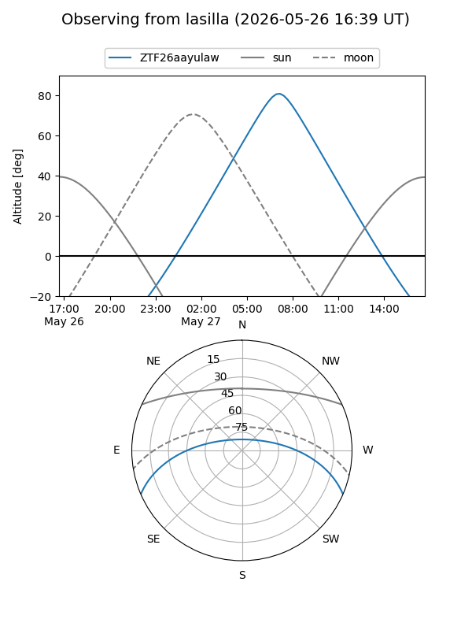
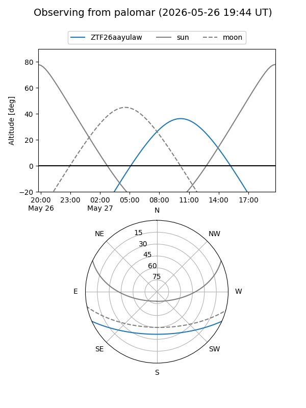

ZTF26aayulaw
Target ZTF26aayulaw at 2026-05-26 11:44
Aliases and brokers:
lsst-FINK: link
lsst-Lasair: link
lsst-ALeRCE: link
ztf-FINK: link
ztf-Lasair: link
ztf-ALeRCE: link
alt names
ZTF26aayulaw (ztf,fink_ztf)
Coordinates:
equatorial (ra, dec) = 280.0377,-20.29485
equatorial (HMS+DMS) = 18:40:09.05,-20:17:41.46
galactic (l, b) = (13.5398,-6.72274)
Flags:
Photometry:
last ztfg=19.41
1 ztfg detections
Lightcurve
Visibility


Additional plots